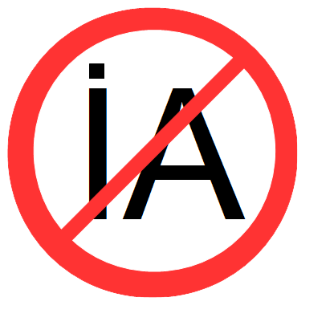

|
|
Fil d'actualités
Un projet de loi facilitant l'accès au CDI pour les contractuels de la fonction publique examiné le 13 janvier 2026 (31/12/2025).
Pour la Cour de justice de l'UE, la reprise d'ancienneté pour les contractuels titularisés ne doit pas se limiter aux deux tiers des périodes de service accomplies au-delà de quatre années. (9/11/2024).
La décision du Conseil d'Etat sur le recours du SAGES pour l'extension du RIPEC aux enseignants contractuels du supérieur sera rendue en audience publique à Paris le 7 juillet 2024 (28/06/2024).
Le SAGES est l'un des deux seuls syndicats ou organisation a avoir placé un professeur contractuel ou vacataire sur la liste de ses candidats au CNESER 2023 (24/04/2023).
Extension du RIPEC aux enseignants contractuels du Supérieur. Communiqué de presse du SNCL et de SAGES ECS (30/11/2022).
Devoirs et droits des contratuels du Supérieur en matière de correction de copies et de surveillance des examens (29/11/2022).
Combats juridiques du SAGES contre le RIPEC (29/11/2022).
Le SAGES ne siègera pas à la séance du CNESER du 15 novembre 2022: notre communiqué de presse (14/11/2022).
|
Adresse postale: SAGES ECS 8 rue Colbert 06110 LE CANNET |
 |